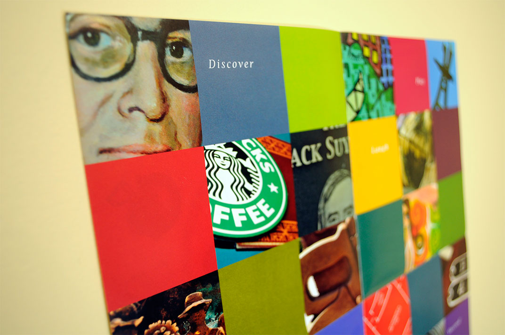
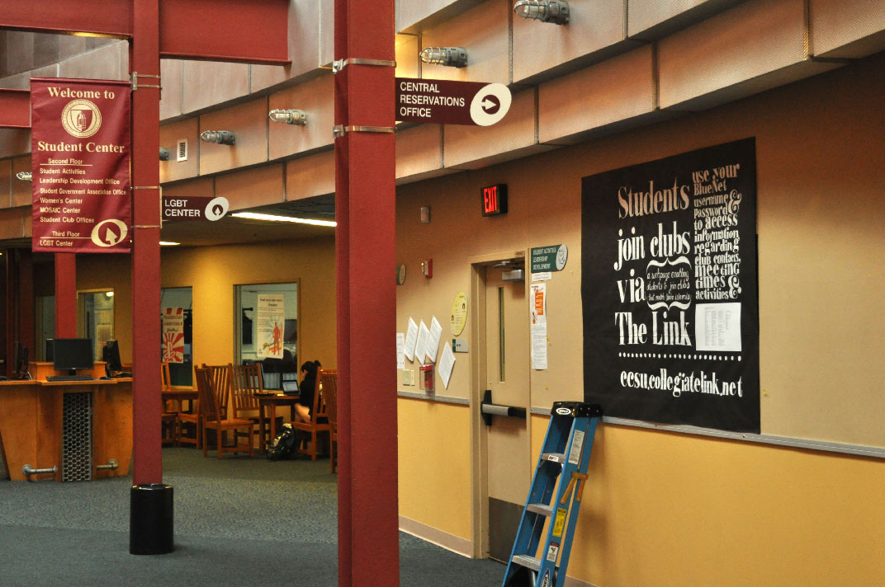

Design
-
Identity
-
Connecticut State University - American Association of University Professors
An organization that represents the faculties of the Connecticut Universities needed a mark to gain presence at the capitol. Using Connecticut's state bird on a weathervane shows the pivitol role this organization has on behalf of the four campuses.
-
Logo for Sexual Assault Awareness Campaign
This is a mark for the commitee dedicated to raising awareness about sexual violence on the CCSU campus. A traumatic expierience may leave one feeling alone and alienated. This symbol shows the diverse circles of support everyone has.
An official handbook was designed and published to be distributed across campus to faculty and staff in case of emergency.

Dionysus Spirits Co.
The donkey that carried the god of wine and agriculture/fertility into a city when he was too drunk to walk. This logo presents a cheerful and honest brand of cognac.

WildThings Furniture Store
If Crate&Barrel and Whole Foods had a child, it would be Wildthings Inc. offering nusual organic furniture to breathe life into any apartment.


Youth Suicide Advisory Board
An identity to communicate help and hope. This delicate subject subject required proper research and a clear message within the logo.
-
-
Packaging
-
Ramen Noodles
Everything is designed strictly with type and the logo takes the form of the brick of uncooked noodles found inside the package. Ramen is hot fast and cheap, so the packaging materials reflect that.

-
Wusah Coffee
Wusah is slang for "calm down and let go". This concept of serenity is placed in the context of the 1500's when empires were conquering the world by sea. The symbol merges a Buddhist Dharma wheel and the 8 Noble Truths with a ships' wheel and coffee beans as the spokes. The Wusah brand is designed with depth and meaning to create an inclusive story and a global movement of peace for its' customers. The best flavors from around the planet are identified by number and colored pattern. An informational card describing the flavors and armoas of each bean show a map of its' origin on the back. These coffee beans feel as if they traveled across the globe by sea and into your cup for you to savor.


-
-
Web

Fergueson Clothing
A brand with attitude and clarity. The layout is minimal and bold with a clear shopping cart simple navigation. Large photographs, subtle animations and sharp wit throughout bring this thing to life.


-
Print
-
Invitations
Silk screened invitations for a celebration of a successful doctoral dissertation and 30th birthday. The recycled cardstock and lack of envelopes proved these mailers to be efficient and without losing impact. Hand painted dots for the eyes created a unique look for each invitation(pun intended).
The typography dictates the pacing and rhythm of the poem that gives cause for celebration.

Youth Suicide Awareness Pamphlet
Youth Suicide Advisory Board needed an information brochure to distribute to raise awareness of an alarming amount of youth commiting suicide in Connecticut. The brochure resembles a secret pocke-sized note passed in class but it holds a serious message. Clear and Bold statistics guide through the booklet and describe the problem leading to a fold-out flyer on the inside where resources for help are listed.


-
College Orientation Flyers
The Orientation flyer for the incoming class of freshmen of Central Connecticut State University was a hit! Without time to send it out for printing, this was to be printed on an old HP printer. To aleviate the horrible problems of that printer, I kept it simple with strict CMYK and type. Keeping the infographic fun and the copy writing casual made the piece engaging and fun melting away the anxiety of orientation.
-
Orientation Program & Poster
At Orientation Weekend these foldout schedules were distributed for the students to hold onto with a poster on the back that could be hung in the dorm room without being lame! A variety of Photographs were taken which and a fun element of intruigue about their locations on campus.
- 
-
-
Posters

Constructivist Calendar
In Lissitzky's style, the challenge was to accurately use the artist's visual grammar and create an engaging and functional calendar spread. I illustrated the warm summer month in the dynamic typographic and geometric style of constructivism.

Oktoberfest with the German Club
The colors were selected to describe the flavors and smells of Oktoberfest. The silouhette of a Daschund subtly communicates that there will be hotdogs.

Student Organization Bulletin Board
A huge bulletin board in the hallway of the CCSU student center to grab the attention of passersby. Hand painted letters give it a genuine feeling of involvement in an activity like student clubs in this case. This saved the office a ton of black ink doing it this way and its stark contrast is unlike anything else in that hallway.
- 

Wadsworth Atheneum Exhibit Mailer
Three Russian artists spanning centuries united by one goal: describing the spiritual essence. Columns of cyrillic and latin alphabets describe the lives of Andrei Rublev, Wassiliy Kandinsky and Mark Rothko. A poster on the back unifies work from the three painters into a new design worthy of display long after the exhibit passes.


Art


About
-
David Zarovny
-
So what about me...
I'm fortunate to have aligned my career with my passions in graphic design. Since childhood, I've been getting my hands dirty and changing, improving, and sometimes ruining my possessions. I prefer tea over coffee and I like my beats with extra bass. I highly value honesty and truth in art & design and do my best to educate myself. Tendencies to go against the grain, I end up discovering fresh perspectives. There's a self-portrait video to the right if you're interested.
-